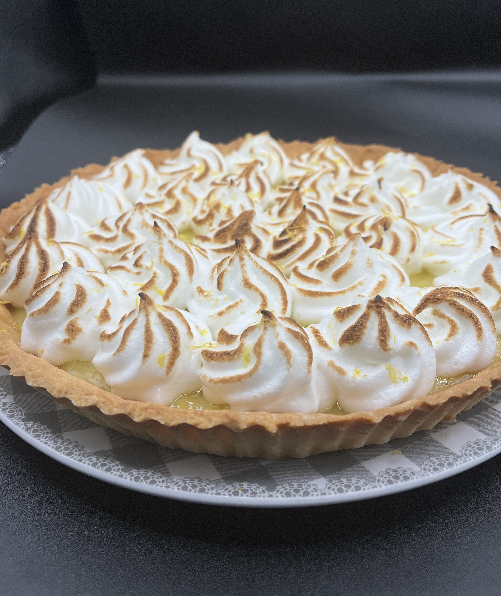

Réalisez dans un premier temps la pâte, mélangez le sucre, le sucre glace, l'oeuf la pincée de sel. Rajoutez ensuite la farine en une seule fois et l'incorporer
avec une spatule, après l'obtention d'un mélange un peu sableux ajoutez ensuite le beurre tempéré. Utilisez votre main pour l'incorporer au reste de votre mélange.
Continuez jusqu'à l'obtention d'une pâte former une boule, filme alimentaire au contact et laissez la reposer au frais 2 heures minimum.
Pour la crème de Citron, prenez une casserole, zestez dedans 1 citron entier et pressez tous les citron sans les pépins, faite bouillir.
A côté de ça, prenez les trois œufs ouvrez les dans un bol et ajoutez le sucre, bâtez le jusqu'à obtenir un mélange mousseux, ajoutez votre Maizena mélangez de nouveau.
Une fois le jus de citron chaud, ajoutez le à votre mélange précèdent bien mélanger et remettre le mélange dans la casserole, sur feu moyen fouettez votre mélange
pour le faire épaissir pendant 2,3 minutes jusqu'à avoir une consistance de crème, laissez refroidir jusqu'à température ambiante et rajoutez le beurre tempéré
avant de mélanger au fouet jusqu'à que tout soit homogène.
Préchauffez votre four à 180°C Sortez votre pâte du frigo, farinez votre poste de travail ainsi que la pâte. Commencez à l'aplatir doucement avec vos mains et finissez
avec un rouleau à pâtisserie jusqu'à la bonne taille de votre moule. Foncez votre pâte au fond de votre moule au préalable beurré couper le surplus de pâte qui déborde.
Prenez une feuille papier cuisson et découpez là de la taille de votre moule place le sur votre pâte et ajoutez des pois chiches par dessus puis enfournez votre pâte au four
pendant 10min, sortez votre pâte.
Enlevez les pois chiches et remettez la pâte au four pendant 8 à 10min.
Une fois la pâte bien cuite avec une belle coloration dorée, laissez la refroidir.
Quand le fond de tarte est froid ajoutez la crème de citron dedans lisez la surface et rentrez le tout au frigo pendant minimum 1 heure.
Pour la meringue, clarifiez les œuf, montez les blancs en neige et rajoutez le sucre dedans une fois qu'il son ferme, finir de bien serrer les blancs.
Prenez une poche à douille avec une douille cannelée (Si possible), sortez votre tarte du frigo et ajoutez joliment la meringue.
Si vous avez un chalumeau à la maison, passez le sur la meringue délicatement juste pour y donner une coloration.
Si vous n'avez pas de chalumeau vous pouvez passez votre tarte dans votre four sous le grill pendant une petite minute.
Et voilà votre tare est prête.
